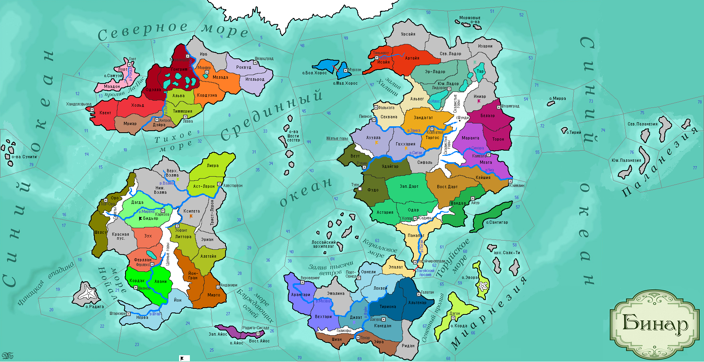

<==
| 1 |
| 2 |
| 3 |
| 4 |
| 5 |
==>

3-й ход истории мира Бинар (1110 г.)
· Войска Бьянфанга совершают неудачный поход в земли Урсайи.
· Загоррские войска терпят поражение в Красной пустыне… Князь Хос I погибает от пропитанного ядом варварского дротика.
· Корфелы прививают в себе традицию трудолюбия с молоком матери…
· Хальдруп I сменил Торбальда I на троне Скандии.
· В условиях ведущихся веками войн файниты выработали в себе привычку к законопослушности.
· Войска рубинарского правителя Дейламы I разбивают варваров в Зап.Дарте, помогая своему союзнику.
· Начало покорения ладорцами соседних северных земель сформировало у них национальный характер первопроходцев.
· Силы Йонтари атакуют захватившие Литтору варварские племена, а затем разбивают поедателей шелковичных гусениц Ксипеты и устанавливают свой контроль над этими землями.
· Телио I садится на трон Терра-Нуэвы.
· Беин I – новый правитель Коринтара.
· Жрецы Дюрандаля основывают религию «культ Мортис», в которой богиня смерти Мортис старого языческого пантеона становится единственным почитаемым божеством. Ведомые ликом Мортис войска Дюрандаля идут на штурм стен г.Пияноя и проигрывают с треском сражение.
· Атарки испокон веков селились небольшими селениями, в которых развивались самоуправляемые общины.
· Князю Парайо I так понравилось справлять пышные свадьбы, что он решил регулярно их справлять, введя традицию многоженства в своем народе.
· Лиерийцы Астерлии наносят поражение аборигенам в землях Верх.Вэлмы.
· Мирадосцы изгоняют варваров со своего острова.
· Астатес II наследует трон Моэдаса.
· Армия Санктума сложила головы в неравной схватке с захватчиками Бидьяра.
· Свидар I провозглашен новым правителем Белаэра. Войска захватывают нейтральные земли Иниара.
· Геннаро I – новый властитель Роквудского пакта.